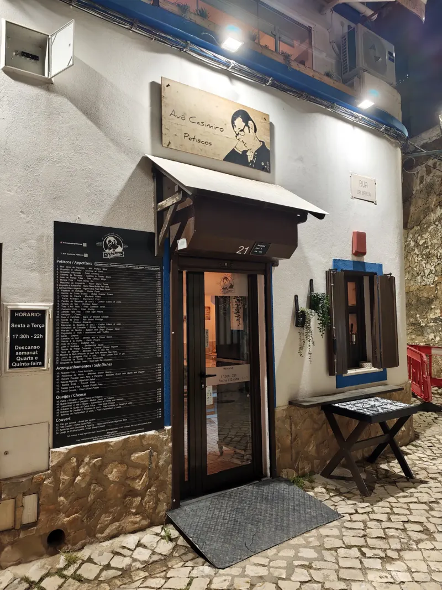
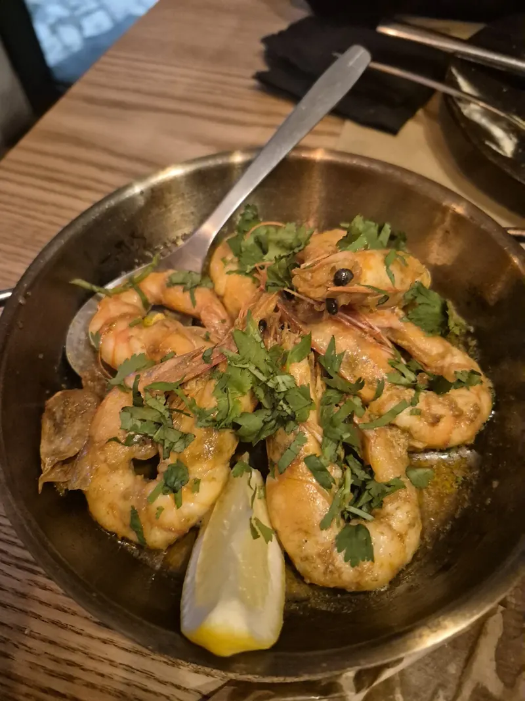
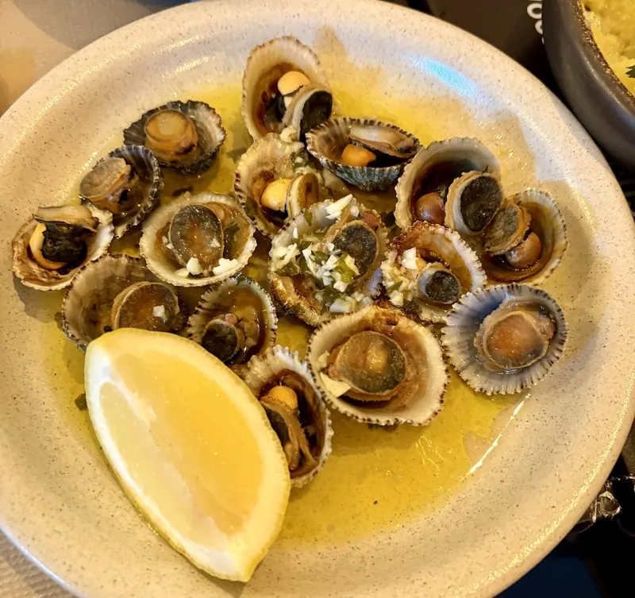
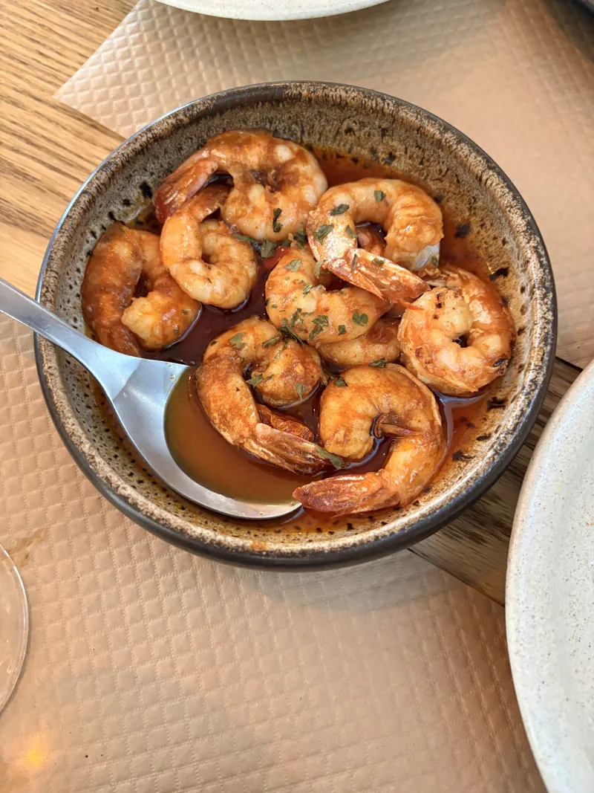
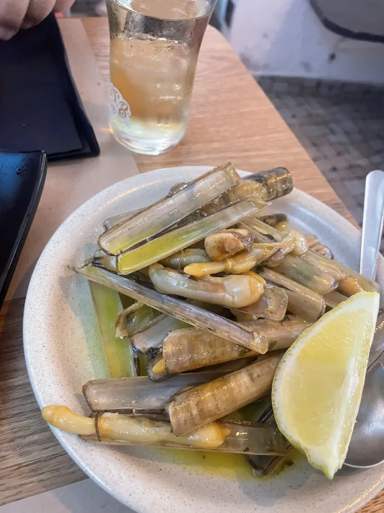
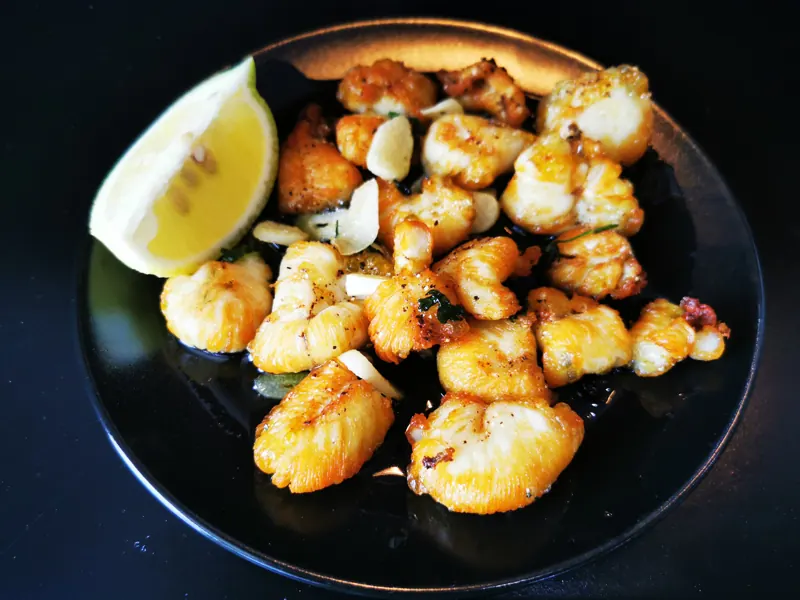
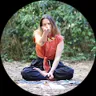

Petiscos do Algarve na Rua da Barca
Uma casa pequena, de família, em Portimão. Pratos para partilhar ao centro da mesa, e o camarão do avô que toda a gente recomenda.

Pede-se um pouco de tudo, e partilha-se
A ementa é feita de petiscos: peixe e marisco do Algarve, pratos pequenos que chegam ao centro da mesa. Quem cá vem diz que o mais difícil é escolher mal.
E fala-se sempre da equipa: recebe-se como em família, mesmo quando já estão quase a fechar.
- Para partilhar
- Sem reservas
- Terraço no piso de cima


O que pedir
Os petiscos que mais aparecem nas avaliações, com as palavras de quem os provou.

Camarão do avô
o da casaMolho cremoso, meio adocicado, excelente para molhar o pão.
avaliação no Google
Lingueirão à Bulhão Pato
Destaque para lingueirão à bulhão pato, mini blinis com boqueirão e as asas de frango.
avaliação no Google
Lulinhas fritas à algarvia
Lulinhas fritas à algarvia incríveis!
avaliação no GoogleTiras do avô e asas de frango
Recomendo particularmente as tiras do avô e as asas de frango, mas é tudo bom!
avaliação no GooglePastéis de bacalhau e biqueirão albardado
As que mais gostámos foram os pastéis de bacalhau e biqueirão albardado.
avaliação no GoogleMoreia frita
para corajososCortada com mestria, fina, sabor forte a peixe. Primeiro estranha-se, depois entranha-se.
avaliação no GoogleMigas de ovas e carapaus alimados
Recomendo umas migas de ovas acompanhadas por uns carapaus alimados e uns filetes de cavala.
avaliação no GoogleNavalheiras
Provar os camarões do avô e as navalheiras.
Ana Manso, Google
Antes de ir
Conselhos de quem já lá jantou, recolhidos nas avaliações.
Não há reservas
É por ordem de chegada. Nas noites mais cheias pode haver espera por mesa, e quem esperou diz que valeu a pena.
Chegue às 17:30 para jantar com calma
Quem entrou à hora de abrir teve a sala quase só para si, e mais tempo para conversar com a equipa.
Peça 2 a 3 petiscos por pessoa
É a conta de vários clientes para provar variedade sem exagerar.
Quem vem, volta
“Estavam prestes a fechar, mas mesmo assim receberam-nos e serviram-nos com tanta gentileza que causaram uma ótima impressão.”
“A não perder em Portimão. A decoração e o cuidado dos funcionários mostram que se trata de um projeto familiar. É uma casa de petiscos, onde o mais difícil é escolher mal. A simpatia no atendimento foi 5 estrelas.”
André ValenteGoogle“Tudo é óptimo neste restaurante. Familiar, intimista, os empregados são 5 estrelas! Provar os camarões do avô e as navalheiras. Até agora a melhor experiência gastronómica.”

Ana MansoGoogle“O ideal é escolher 2 ou 3 petiscos por pessoa, tudo estava óptimo, o serviço rápido e de uma simpatia extraordinária. Tivemos que esperar por mesa mas valeu a pena.”
Rita ReinoGoogle
Horário e mapa
Só ao jantar. Na Rua da Barca, a subir da zona ribeirinha de Portimão.
| Terça | 17:30 – 22:00 |
|---|---|
| Quarta | 17:30 – 22:00 |
| Quinta | 17:30 – 22:00 |
| Sexta | 17:30 – 22:00 |
| Sábado | 17:30 – 22:00 |
| Domingo | Encerrado |
| Segunda | Encerrado |
- R. da Barca 21, 8500-690 PortimãoSem reservas, por ordem de chegada
- 968 765 204
- @avocasimiropetiscos
- Ver no Tripadvisor